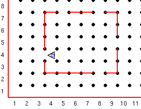
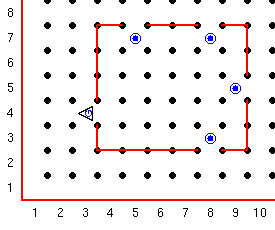

Guido kan complexere taken verrichten, zelfs als hij in een wereld leeft die niet helemaal bekend is. Guido moet een doel kunnen bereiken door zijn omgeving te onderzoeken en gebaseerd op de uitkomsten aktie ondernemen. De stappen die Guido neemt om een probleem op te lossen noemen we een algoritme.
Voordat er een GvR programma wordt geschreven moet de programeur het algoritme begrijpen. Dan kan het in code gezet worden, gecombineerd met de juiste wereld, en getest.
Denk aan de krachtige vergelijking Algoritme + Datastructuur = programma
In deze les is de data structuur een wereld die Guido's huis beschrijft. Guido staat bij de deur en kijkt naar buiten. Hij ziet een storm aankomen en besluit om alle ramen in het huis te sluiten. Eerst sluit hij de deur door een pieper te plaatsen waar hij staat. Dan sluit hij de ramen door een pieper te plaatsen in ieder raam (voorgesteld door openingen in de muren). Hij vind storm geweldig dus na het sluiten van de ramen gaat hij naar buiten.
Hier is de start wereld voor dit project.

Je moet het algoritme hiervoor bedenken en de code schrijven (coden), en de wereld maken. Guido heeft nog niet lang in zijn huis gewoond dus hij weet niet precies waar de ramen zijn. Je kunt niet de stappen coden, in plaats daarvan moet Guido controleren waar een open raam is terwijl hij in het huis langs de muren rondloopt.
Zoals voor ieder algoritme moet je zeker weten dat de taak ook af gemaakt wordt.
Bijvoorbeeld, hoe weet Guido dat hij terug is bij de deur?
Als het programma klaar is moet de wereld moet er zo uitzien:

Deze serie Guido van Robot lessen zijn geschreven door
Roger Frank.
Commentaar and suggesties over deze lessen kunnen gestuurd worden naar
Stas Zytkiewicz die de lessen
vertaalde naar het Nederlands.
De orginele lessen zijn te vinden op de
Guido van Robot website.
Copyright
© 2003 Jeffrey Elkner.
© 2007 Stas Zytkiewicz.